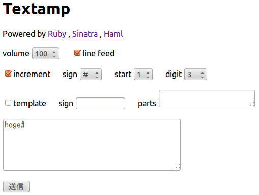
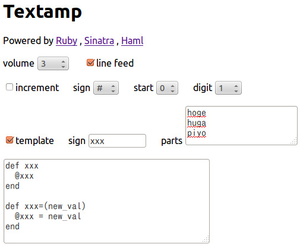
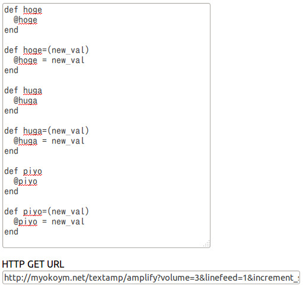

2013-01-27
文字列に通番を付けて殖やすツールを作成中
Text amplifier - テキスト増幅器
例1 hoge001〜hoge100をつくる
- volume: 100
- linefeed: ON
- increment: ON
- sign: #（任意）
- start: 1
- digit: 3
- template: OFF

結果
hoge001〜hoge100ができます。

例2 ゲッターとセッターをつくる
通番以外にも、部分的に置換する機能があります。
- volume: 3（3組の場合）
- linefeed: ON
- increment: OFF
- template: ON
- sign: xxx（任意）
- parts: hoge huga piyo（改行区切り）

結果
ゲッターとセッターができます。

HTTP-GETに対応
微修正したいとき
- フォームの入力内容は保存していないので消えてしまいます。
- その代わりにHTTP-GETに対応しているので、パラメータをいじれば手軽に微修正が可能です。
フォームのドロップダウンが足りないとき
- volumeはフォームでは100までしかありませんが、HTTP-GETなら101個以上に殖やすことが可能です。
- signやstart、digitも同様です。
TODO
- デザインをもっとわかりやすくしたい。
- CSS書くとか
- 操作性をよくしたい。
- JavaScript書くとか